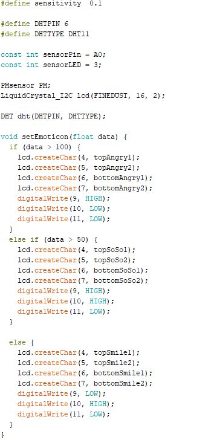
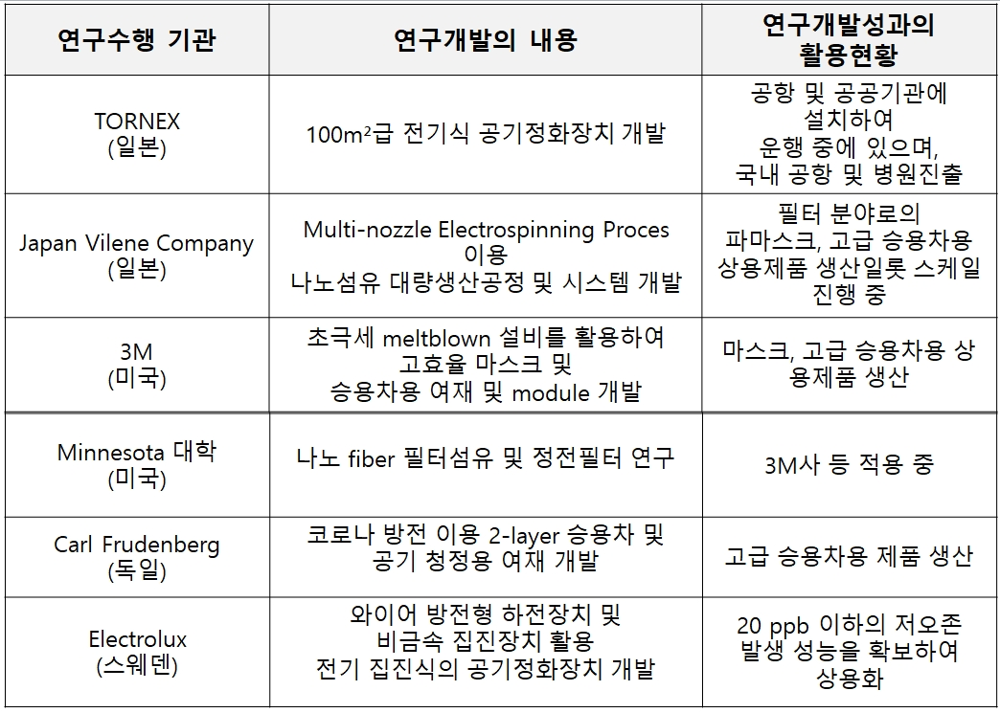
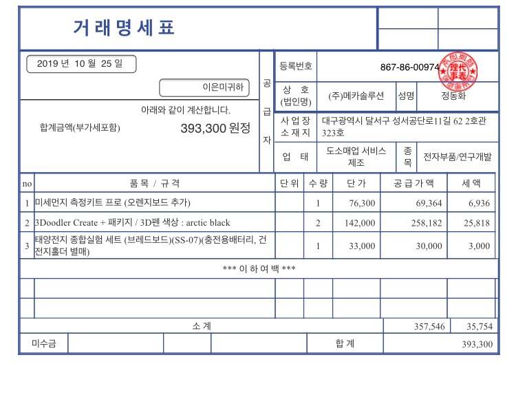

1-1. 프로젝트 개요
1-2. 프로젝트 목표
1-3. 프로젝트 사례
2-1. 프로젝트 기술
2-2. 국내 기술 현황
2-3. 국외 기술 현황
3-1. 개발 일정별 진도
3-2. 예산 사용 내역
3-3. 목표 대비 실적
4-1. 연구진행상황에 대한 자체평가 및
앞으로 연구 계획
5-1. 출처
현대에 중국에서 발생하여 넘어오는 미세먼지 관련한 환경 문제가
부각됨으로써 제품 조립과 센서 조작을 통하여 실생활에서 미세먼지를 측정함으로써 사용자의 생활에서 문제에 대한 경각심을 주고자 함.
가. 미세먼지에 대한 인식 부각
미세먼지가 현대인의 건강에 작용하는 문제가 대두됨으로써
미세먼지 측정기를 실생활에 적용함으로써 인식을 부각시키고자 함.
나. 미세먼지의 환경에 관한 요구도 상승
현대인의 미세먼지에 관한 관심이 상승함으로 인해 도움을 주고자
이와 관련된 제품들이 출시되었지만 높은 가격으로 인해 접근이 쉽지
않기 때문에 적은 금액으로 사용자의 접근성을 높이고자 함.
South Korea pollution: Is China the cause of 'fine dust'?
Some say the polluted air comes from China - studies have suggested that as much as 60% of South Korea's air pollution comes from its western neighbour's industrial sites and coal plants. ···
As we climb above the peninsula, we soar near some of South Korea's own power plants. Coal generates about 40% of the country's total electricity, followed by nuclear and gas.
일부 사람들은 오염 된 공기가 중국에서 온다고 말합니다. 중국뿐만아니라 연구에 따르면 한국의 대기 오염의 60 %가
서부 지역의 산업 현장과 석탄 공장에서 비롯된 것으로 나타났습니다. 한국 자체 발전소. 석탄은 국가 전체 전력의
약 40 %를 생산 한 다음 핵과 가스를 생산합니다.
Armed With NASA Data, South Korea Confronts Its Choking Smog
South Korea faces a chronic dirty air problem that makes it one of the most polluted countries in the world. It's common to hear that neighboring China is to blame, but a joint study by NASA and the Korean government has found there's a lot South Korea can do on its own to cut the smog.
NASA 데이터로 무장 한 한국, 질식 스모그 대결
한국은 만성 오염 된 공기 문제에 직면하여 세계에서 가장 오염 된
국가 중 하나입니다. 이웃 중국이 책임을지고 있다고 들리는 것은 흔한 일이지만 NASA와 한국 정부의 공동 연구에
따르면 남한이 미세먼지를 없애기 위해 스스로 할 수있는 일이 많다는 사실이 밝혀졌다.
기본동작방식
sensivity 0.1 의 민감도 설정을 통해서 측정되는 값을 기준으로 값>100, 100<값<50, 값>50 3가지 범위안에서
계산하여 출력됨.

웹페이지 제작에 사용된 명령어 및 설정
CLICK HERE
국내 미세먼지 대응 기술 수준은 최고 기술 보유국 대비 평균 70.5%, 기술 격차 7.5년임 대기업은 미세먼지 처리 소재 및
공정개발 기술 분야, 스크러버 분야, ICT 기반 대기오염물질 관리 분야 등 실적용을 위한 기술 확보가 이루어지고 있음.
학-연 등의 연구기관에는 물질별 제거 반응 원인 규명, 소재 원천기술 및 소재/공정 주요 핵심기술 분야에 집중하고 있음.
큰 먼지에서 작은 먼지로(TSP → PM10 → PM2.5)로 이동하기 때문에 기존 설비의 개선 및 집진기술 성능개선의 기술
확보가 요구되고 있음.
1차 배출(집진)과 2차 생성(탈질·탈황) 전구물질 제거에 초점이 맞추어져 있음
미세먼지 관련 기술은 고정오염원 배출
저감, 이동오염원 배출저감, 생활환경 노출저감 등 기술의 활용 방법에따라 개발동향이 상이함.
[고정오염원 배출저감]
새로운 배출저감 기술을 개발하는 것 보다는, 기존의 공장설비에 설치가능하고 설치 공간을 최소화하면서도 미세먼지
배출을 획기적으로 줄일 수 있는 집진장치에 대한 기술개발이 이뤄지고 있음.
[이동오염원 배출저감]
(유해가스 저감 촉매) 2차 생성 미세먼지의 저감을 위하여 공기 중 배출되는 유해가스를 촉매를 이용하여 선택적으로
제거할 수 있는 SCR(Selective Catalytic Reduction) 촉매연구가 활발함.
[노출 저감]
(저감용 에어필터) 단순히 여과성능을 기본으로 한 유리섬유 필터 여과 매체에서 현재 저차압 성능의 동등이상 수준의
여과효율을 보이는 합성고분자 필터 여과매체로 대체가 이루어지고 있음.
세계 수준의 미세먼지 저감 기술은 초미세먼지 규제가 강화된 미국과 일본을 중심으로 다양한 설비를 개발 중임.

운영계획서 세부계획서 발표 직후 프로젝트에 들어갈 부품의 기본적인 기능과 앞으로 조립할 순서에 대해
토론하였음.

미세먼지측정기 제작을 목표로 하였고,
월별운영계획서에 월별로 명시 되어있는 내용에서는 9월부터 부품에 대한 기본 이해
및 제작품 부품 역할 확인과 코딩 기본지식 확인 부분에 있어서 약 88퍼센트 가량 진행하였고,
현재까지
전체적인 관점에서
진행도는 약 63퍼센트 정도로 프로젝트 초기 설정한 목표에
변수가 발생하더라도 문제없이 도달할 수 있는 수준임.
현재 팀의 단합력 뿐만 아니라 팀원들이 맡은 각각의 역할에 충실함과 더불어 다른 팀원들의 역할까지 서로 도움을 주면서
진행 되고 있기 때문에 현재까지 어떠한 문제도 일어나지 않았고 그와 더불어 프로젝트 역시 계획에 차질 없이 진행되고 있음.
따라서, 현재 분위기를 유지하는데 노력하며 앞으로 센서를 추가하는 등 측정 정확도와 완성 정확도를 높이는 부분에 관하여 토론하며 프로젝트를 진행할 예정임.
[프로젝트사례]
1. BBC
(https://www.bbc.com/news/world-asia-48346344)
2. NPR
(https://www.npr.org/sections/parallels/2017/10/10/552264719/armed-with-nasa-data-south-korea-confronts-
its-choking-smog)
[기술 동향]
1. itfind (64호 미세먼지)
(http://webcache.googleusercontent.com/
search?q=cache:A4y9raiSFHgJ:www.itfind.or.kr/admin/getFile.htm%3Fidentifier%3D02-001-
181207-000030+&cd=2&hl=ko&ct=clnk&gl=kr)